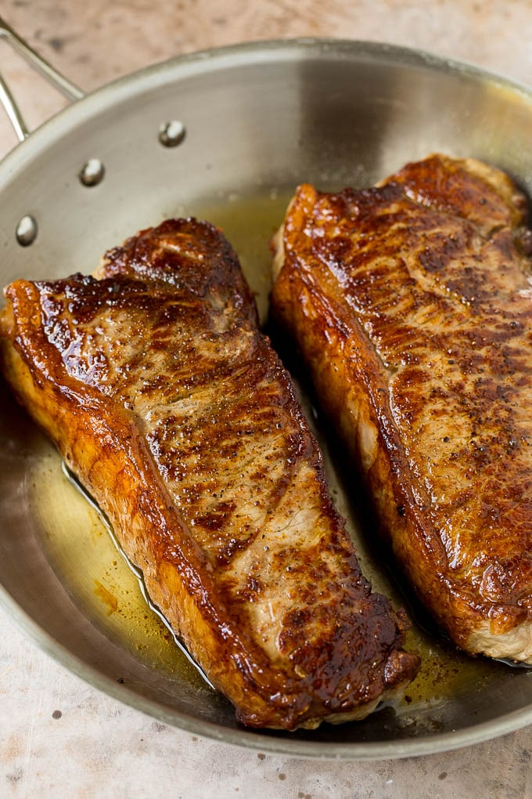

New York Strip Steak with Garlic Butter

Description
This New York strip steak is a seared steak that's cooked to golden brown,
then topped with a garlic and herb butter. An easy dinner recipe that
tastes like it came from a steakhouse, but can be made in the comfort of
your own home.
Ingredients:
- 4 New York strip steaks 8-10 ounces each
-
1 1/2 tablespoons neutral flavored oil such as corn oil, safflower oil,
canola oil, grapeseed oil or peanut oil
- salt and pepper to taste
- 4 tablespoons butter
- 4 garlic cloves smashed
- 5 sprigs fresh thyme
Instructions:
- Let the steaks sit at room temperature for 20 minutes.
-
Preheat the oven to 450 degrees F. Season the steaks on both sides with
salt and pepper to taste.
- Heat a heavy pan such as a cast iron skillet over high heat.
-
Add the oil to the pan. Place the strip steaks in the pan in a single
layer.
- Cook for 3-4 minutes per side or until deep golden brown.
-
Add the butter to the pan. After the butter has melted, add the garlic
cloves and thyme sprigs to the pan. Stir to combine.
-
Spoon the butter mixture over the steaks. Insert a probe thermometer
into the thickest part of one of the steaks.
Back to Top
Back to Home